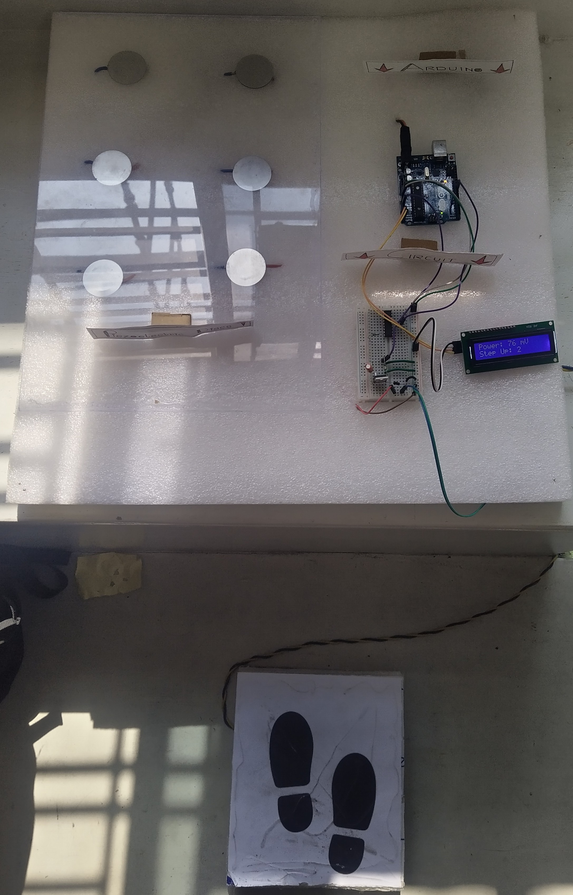
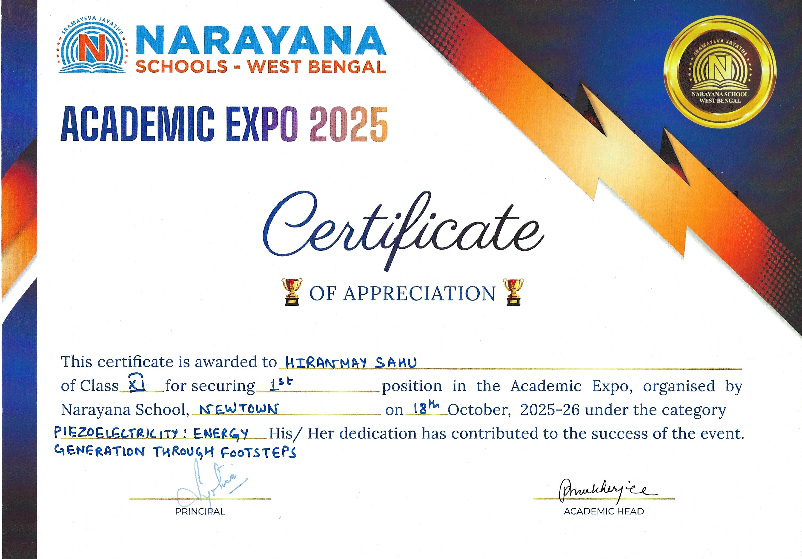
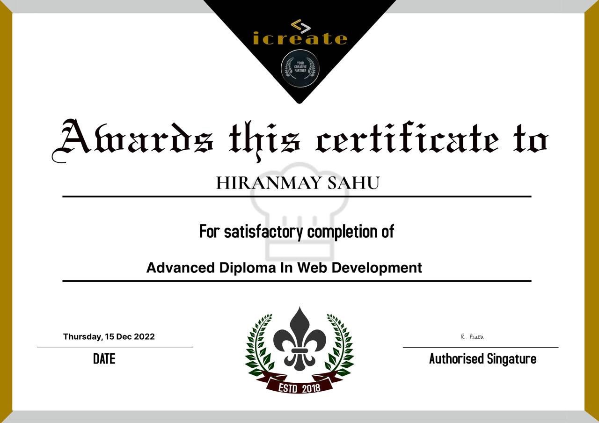
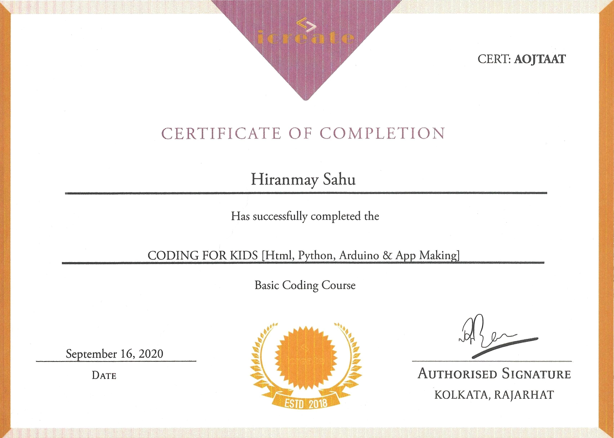
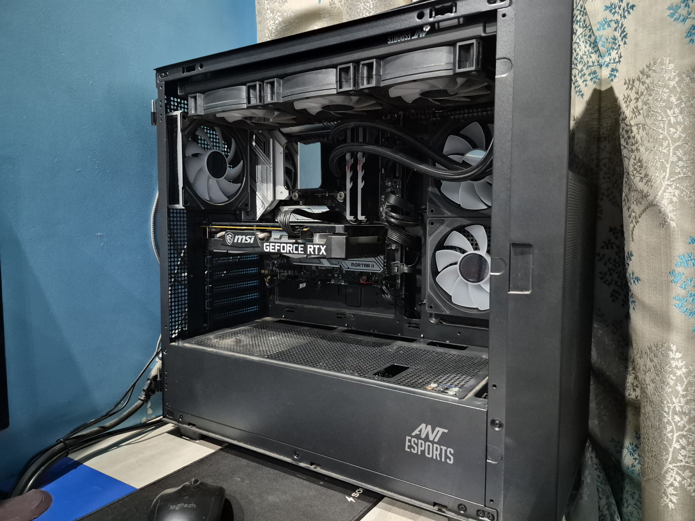
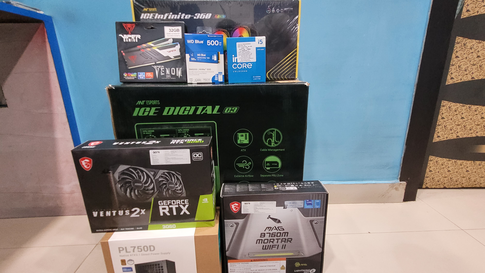
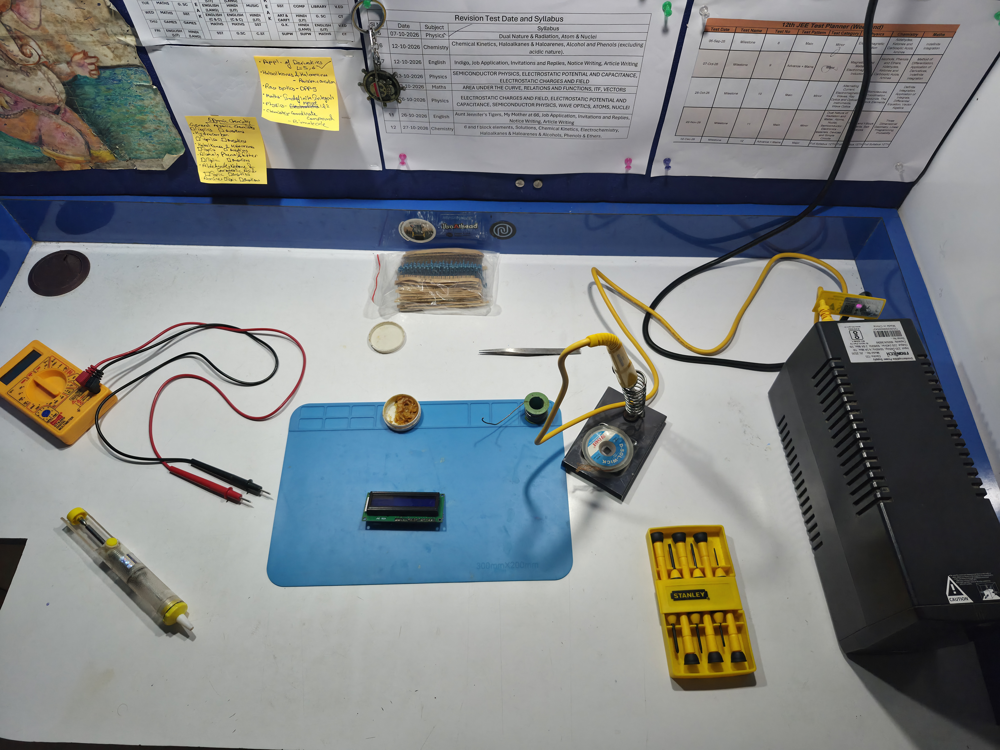

What have I accomplished and achieved over the years?
-The Build: I conceptualized, engineered, and led the development of a functional hardware prototype that captures mechanical energy from human footsteps and converts it into usable electricity.
-The Tech: Arduino UNO, custom C++ coding, Breadboard , Piezoelectric Discs, MOSFETs, Rectifier Diodes, and ICs.
-The Problem: The Arduino was picking up noise and the MOSFET was transmitting a constant inaccurate reading to the Arduino. To solve it I had to manually tweak the code to deal with the reading.

Due to my unique and innovative approach and consideration towards sustainable development(the theme of the expo), I secured the first position in the Narayana School- Newtown Academic Expo 2025.

This certification covers Python, HTML, CSS, JavaScript, ES6, ReactJS, NextJS, Bootstrap & Tainwind CSS, Django(Backend development), MongoDB, Deployment and Introduction to ChatBot. This comprehensive program has equipped me with the skills and knowledge to build modern web applications and deploy them effectively.

Earning this certification solidified my understanding of computational logic and structural programming. By mastering fundamental coding concepts, I developed the algorithmic thinking necessary to write efficient scripts for microcontrollers and bridge the gap between software instructions and physical hardware execution.

I assembled a fully functional personal computer without any guidance, gaining hands-on experience with hardware components. It took a total of 5 hours to complete and the system booted on first try.

Carefully researching and selecting each component was a critical phase of the build. I evaluated GPU requirement, CPU-Chipset compatibility, thermal constraints and power delivery to ensure optimal system performance without bottlenecks. This deep dive into hardware specifications gave me a highly practical understanding of computer architecture, component integration and system efficiency. Not to mention the satisfaction of building something from the ground up before the memory shortage!

This is my dedicated makeshift workstation/study table where theoretical knowledge meets practical application. Equipped with a multimeter, soldering station and breadboard, this is where I prototype Arduino circuits, test semiconductor components like MOSFETs and diodes, and many other components. Having this dedicated space allows me to continuously experiment with electronics and repair household appliances.
